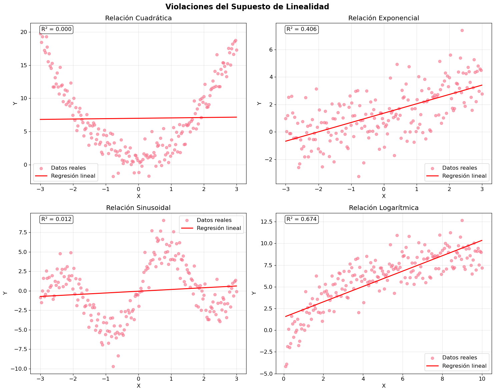
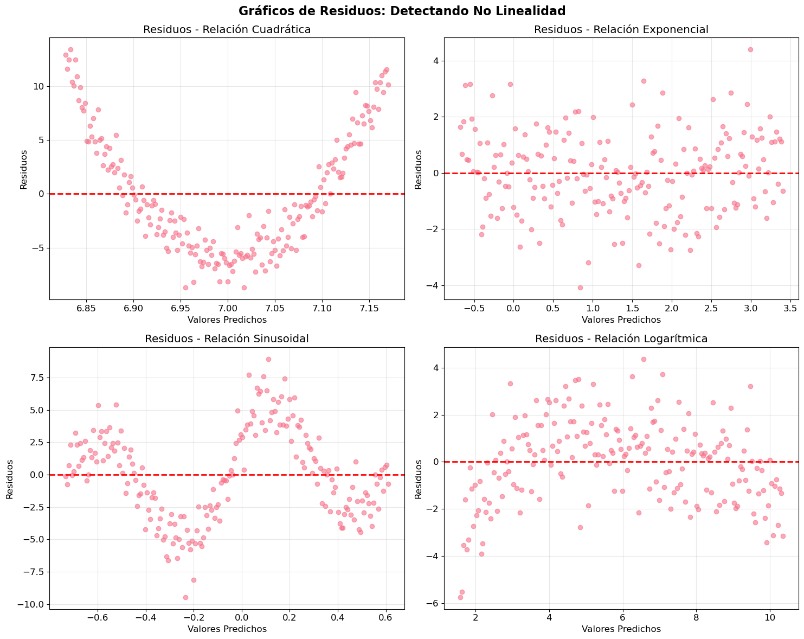
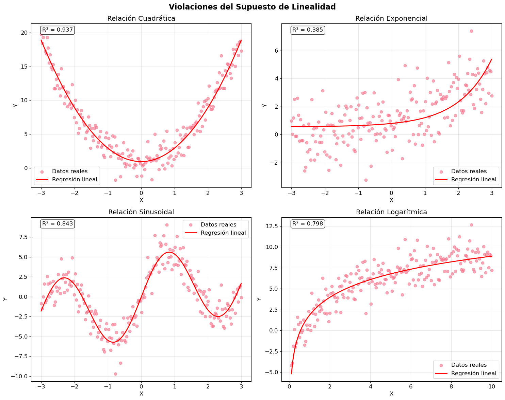
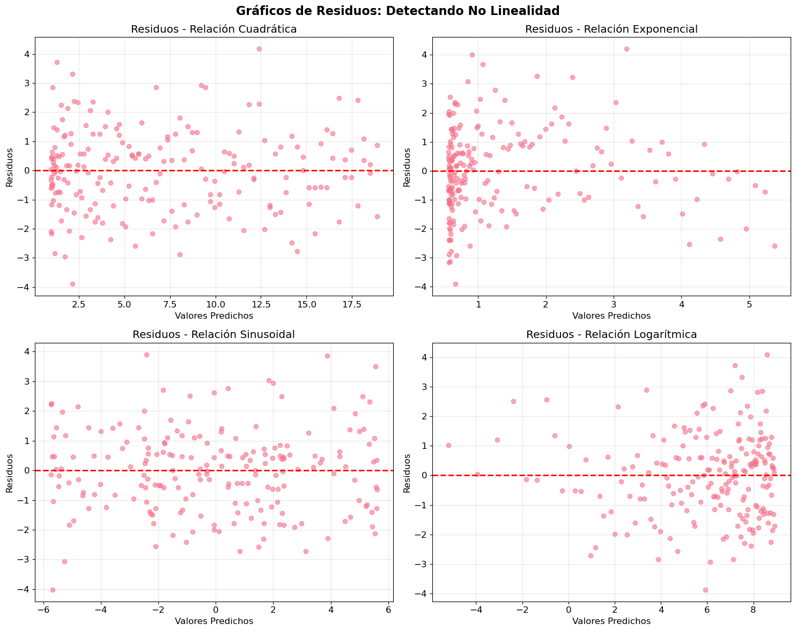
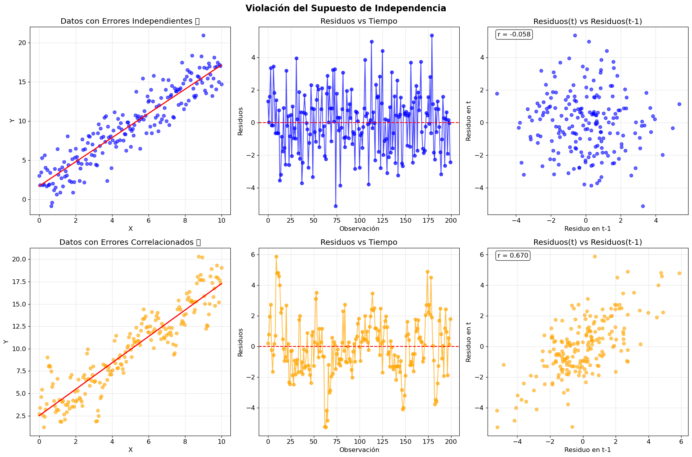
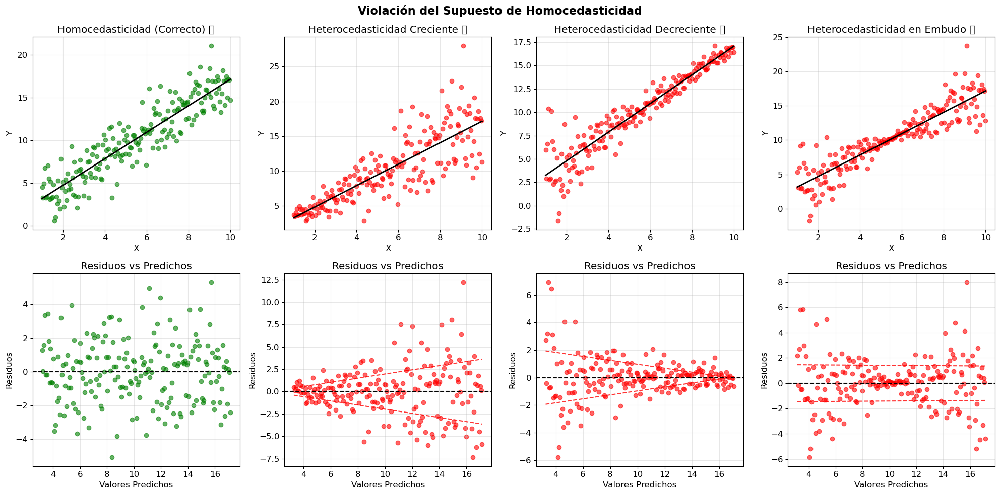
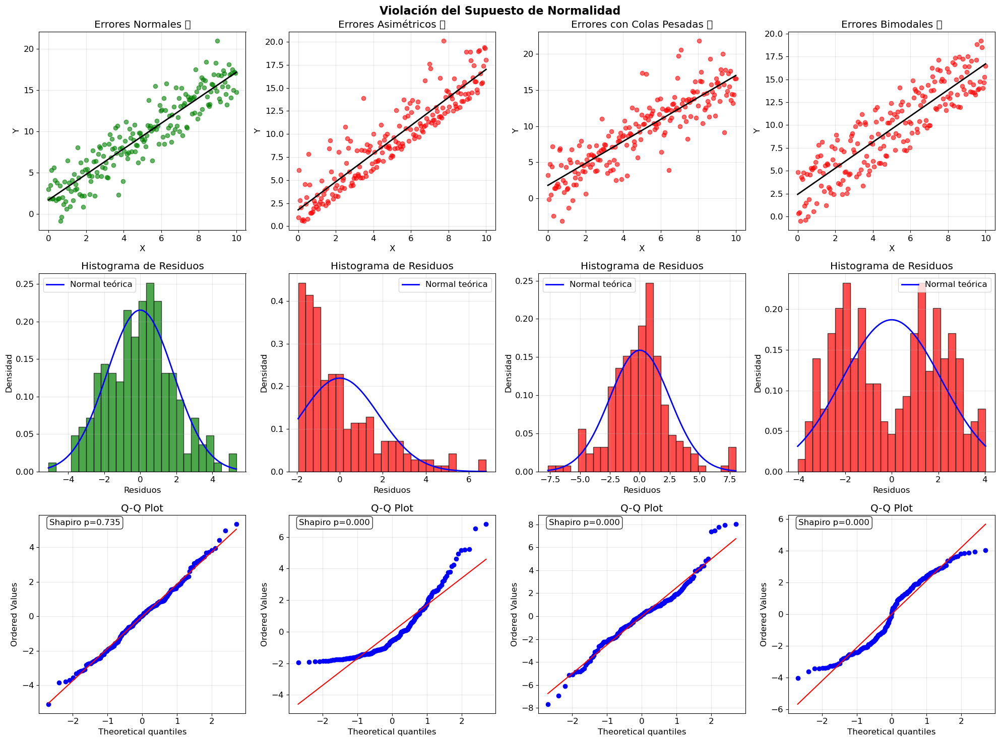
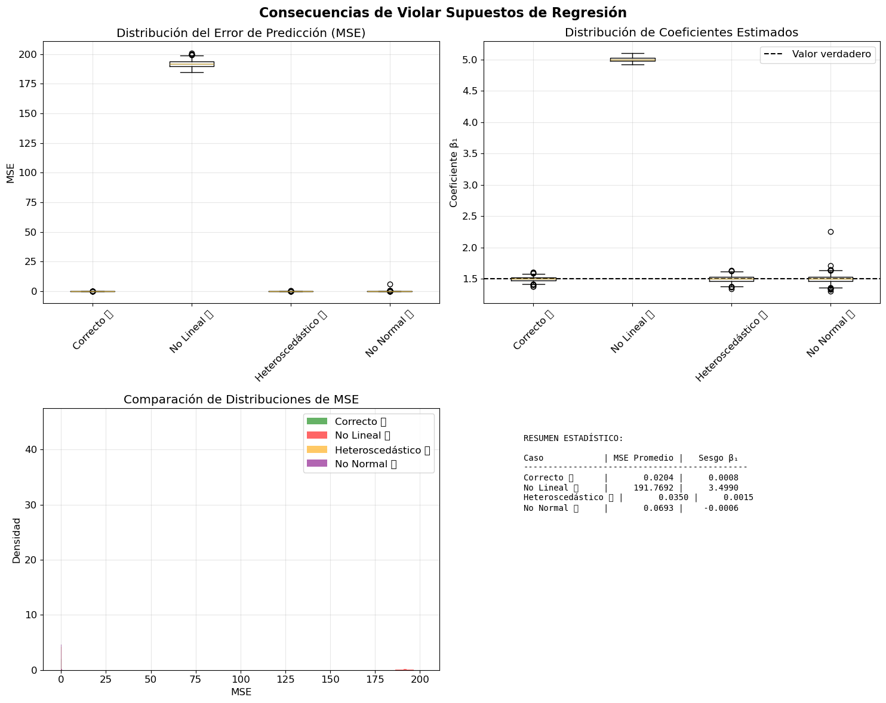
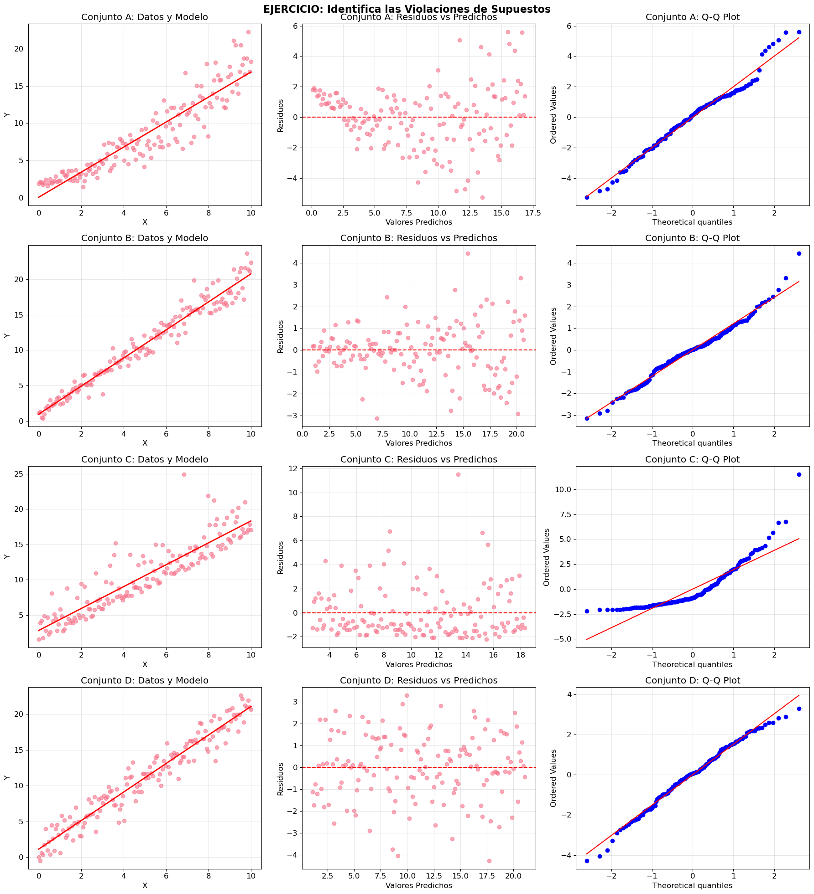

import numpy as np
import pandas as pd
import matplotlib.pyplot as plt
import seaborn as sns
from sklearn.linear_model import LinearRegression
from sklearn.metrics import mean_squared_error
from scipy import stats
import warnings
warnings.filterwarnings('ignore')
# Configuración de gráficos
plt.style.use('default')
sns.set_palette("husl")
plt.rcParams['figure.figsize'] = (12, 8)
plt.rcParams['font.size'] = 12Violaciones de los Supuestos de Regresión Lineal
Este notebook demuestra gráficamente cómo pueden violarse los cuatro supuestos principales de la regresión lineal:
- Linealidad: La relación entre X e Y debe ser lineal
- Independencia: Los errores no deben estar correlacionados
- Homocedasticidad: Varianza constante de los errores
- Normalidad: Los errores siguen distribución normal
1. Violación del Supuesto de Linealidad
El supuesto de linealidad requiere que la relación entre X e Y sea lineal. Cuando esto se viola, un modelo lineal será inadecuado.
def crear_datos_no_lineales(n=200, tipo='cuadratico', noise=1.0, seed=42):
"""Genera datos con relaciones no lineales"""
np.random.seed(seed)
x = np.linspace(-3, 3, n)
if tipo == 'cuadratico':
y = 2 * x**2 + 1 + np.random.normal(0, noise, n)
titulo = "Relación Cuadrática"
elif tipo == 'exponencial':
y = np.exp(x/2) + np.random.normal(0, noise, n)
titulo = "Relación Exponencial"
elif tipo == 'sinusoidal':
y = 5 * np.sin(2*x) + x + np.random.normal(0, noise, n)
titulo = "Relación Sinusoidal"
elif tipo == 'logaritmico':
x = np.linspace(0.1, 10, n)
y = 3 * np.log(x) + 2 + np.random.normal(0, noise, n)
titulo = "Relación Logarítmica"
return x, y, titulo
# Crear subplots para diferentes tipos de no linealidad
fig, axes = plt.subplots(2, 2, figsize=(15, 12))
fig.suptitle('Violaciones del Supuesto de Linealidad', fontsize=16, fontweight='bold')
tipos = ['cuadratico', 'exponencial', 'sinusoidal', 'logaritmico']
for i, tipo in enumerate(tipos):
row = i // 2
col = i % 2
x, y, titulo = crear_datos_no_lineales(tipo=tipo, noise=1.5)
# Ajustar modelo lineal
lr = LinearRegression()
X_reshaped = x.reshape(-1, 1)
lr.fit(X_reshaped, y)
y_pred = lr.predict(X_reshaped)
# Gráfico
axes[row, col].scatter(x, y, alpha=0.6, label='Datos reales')
axes[row, col].plot(x, y_pred, 'r-', linewidth=2, label='Regresión lineal')
axes[row, col].set_title(titulo)
axes[row, col].set_xlabel('X')
axes[row, col].set_ylabel('Y')
axes[row, col].legend()
axes[row, col].grid(True, alpha=0.3)
# Calcular R²
r2 = lr.score(X_reshaped, y)
axes[row, col].text(0.05, 0.95, f'R² = {r2:.3f}',
transform=axes[row, col].transAxes,
bbox=dict(boxstyle='round', facecolor='white', alpha=0.8))
plt.tight_layout()
plt.show()
Diagnóstico: Gráficos de Residuos vs Valores Predichos
Una forma de detectar no linealidad es examinar los residuos. Si hay patrones en los residuos, indica problemas con el modelo.
# Crear gráficos de residuos para detectar no linealidad
fig, axes = plt.subplots(2, 2, figsize=(15, 12))
fig.suptitle('Gráficos de Residuos: Detectando No Linealidad', fontsize=16, fontweight='bold')
for i, tipo in enumerate(tipos):
row = i // 2
col = i % 2
x, y, titulo = crear_datos_no_lineales(tipo=tipo, noise=1.5)
# Ajustar modelo lineal
lr = LinearRegression()
X_reshaped = x.reshape(-1, 1)
lr.fit(X_reshaped, y)
y_pred = lr.predict(X_reshaped)
residuos = y - y_pred
# Gráfico de residuos
axes[row, col].scatter(y_pred, residuos, alpha=0.6)
axes[row, col].axhline(y=0, color='red', linestyle='--', linewidth=2)
axes[row, col].set_title(f'Residuos - {titulo}')
axes[row, col].set_xlabel('Valores Predichos')
axes[row, col].set_ylabel('Residuos')
axes[row, col].grid(True, alpha=0.3)
plt.tight_layout()
plt.show()
print("📊 INTERPRETACIÓN:")
print("✅ Residuos aleatorios alrededor de 0 = Linealidad OK")
print("❌ Patrones en residuos = Violación de linealidad")
print(" - Curva: Relación cuadrática o polinomial")
print(" - Tendencia: Relación exponencial o logarítmica")
print(" - Oscilación: Efectos cíclicos o sinusoidales")
📊 INTERPRETACIÓN:
✅ Residuos aleatorios alrededor de 0 = Linealidad OK
❌ Patrones en residuos = Violación de linealidad
- Curva: Relación cuadrática o polinomial
- Tendencia: Relación exponencial o logarítmica
- Oscilación: Efectos cíclicos o sinusoidalesSolución
# Crear subplots para diferentes tipos de no linealidad
fig, axes = plt.subplots(2, 2, figsize=(15, 12))
fig.suptitle('Violaciones del Supuesto de Linealidad', fontsize=16, fontweight='bold')
for i, tipo in enumerate(tipos):
row = i // 2
col = i % 2
x, y, titulo = crear_datos_no_lineales(tipo=tipo, noise=1.5)
# Ajustar modelo lineal
lr = LinearRegression()
X_reshaped = x.reshape(-1, 1)
if tipo == "cuadratico":
X_reshaped = X_reshaped**2
if tipo == "exponencial":
X_reshaped = np.exp(X_reshaped)
if tipo == "sinusoidal":
X_reshaped = np.concatenate((np.sin(2*X_reshaped), X_reshaped), axis = 1)
if tipo == "logaritmico":
X_reshaped = np.log(X_reshaped)
lr.fit(X_reshaped, y)
y_pred = lr.predict(X_reshaped)
# Gráfico
axes[row, col].scatter(x, y, alpha=0.6, label='Datos reales')
axes[row, col].plot(x, y_pred, 'r-', linewidth=2, label='Regresión lineal')
axes[row, col].set_title(titulo)
axes[row, col].set_xlabel('X')
axes[row, col].set_ylabel('Y')
axes[row, col].legend()
axes[row, col].grid(True, alpha=0.3)
# Calcular R²
r2 = lr.score(X_reshaped, y)
axes[row, col].text(0.05, 0.95, f'R² = {r2:.3f}',
transform=axes[row, col].transAxes,
bbox=dict(boxstyle='round', facecolor='white', alpha=0.8))
plt.tight_layout()
plt.show()
# Crear gráficos de residuos para detectar no linealidad
fig, axes = plt.subplots(2, 2, figsize=(15, 12))
fig.suptitle('Gráficos de Residuos: Detectando No Linealidad', fontsize=16, fontweight='bold')
for i, tipo in enumerate(tipos):
row = i // 2
col = i % 2
x, y, titulo = crear_datos_no_lineales(tipo=tipo, noise=1.5)
# Ajustar modelo lineal
lr = LinearRegression()
X_reshaped = x.reshape(-1, 1)
if tipo == "cuadratico":
X_reshaped = X_reshaped**2
if tipo == "exponencial":
X_reshaped = np.exp(X_reshaped)
if tipo == "sinusoidal":
X_reshaped = np.concatenate((np.sin(2*X_reshaped), X_reshaped), axis = 1)
if tipo == "logaritmico":
X_reshaped = np.log(X_reshaped)
lr.fit(X_reshaped, y)
y_pred = lr.predict(X_reshaped)
residuos = y - y_pred
# Gráfico de residuos
axes[row, col].scatter(y_pred, residuos, alpha=0.6)
axes[row, col].axhline(y=0, color='red', linestyle='--', linewidth=2)
axes[row, col].set_title(f'Residuos - {titulo}')
axes[row, col].set_xlabel('Valores Predichos')
axes[row, col].set_ylabel('Residuos')
axes[row, col].grid(True, alpha=0.3)
plt.tight_layout()
plt.show()
2. Violación del Supuesto de Independencia
Los errores deben ser independientes entre sí. Esto es especialmente importante en datos de series temporales.
def crear_datos_correlacionados(n=200, correlacion=0.7, seed=42):
"""Genera datos con errores correlacionados (autocorrelación)"""
np.random.seed(seed)
# Datos independientes (correctos)
x = np.linspace(0, 10, n)
errores_independientes = np.random.normal(0, 2, n)
y_independiente = 2 + 1.5 * x + errores_independientes
# Datos con autocorrelación (violación)
errores_correlacionados = np.zeros(n)
errores_correlacionados[0] = np.random.normal(0, 2)
for i in range(1, n):
errores_correlacionados[i] = (correlacion * errores_correlacionados[i-1] +
np.sqrt(1 - correlacion**2) * np.random.normal(0, 2))
y_correlacionado = 2 + 1.5 * x + errores_correlacionados
return x, y_independiente, y_correlacionado, errores_independientes, errores_correlacionados
# Generar datos
x, y_indep, y_corr, err_indep, err_corr = crear_datos_correlacionados()
# Ajustar modelos
lr_indep = LinearRegression().fit(x.reshape(-1, 1), y_indep)
lr_corr = LinearRegression().fit(x.reshape(-1, 1), y_corr)
y_pred_indep = lr_indep.predict(x.reshape(-1, 1))
y_pred_corr = lr_corr.predict(x.reshape(-1, 1))
residuos_indep = y_indep - y_pred_indep
residuos_corr = y_corr - y_pred_corr
# Crear gráficos
fig, axes = plt.subplots(2, 3, figsize=(18, 12))
fig.suptitle('Violación del Supuesto de Independencia', fontsize=16, fontweight='bold')
# Fila 1: Datos independientes (correctos)
axes[0, 0].scatter(x, y_indep, alpha=0.6, color='blue')
axes[0, 0].plot(x, y_pred_indep, 'r-', linewidth=2)
axes[0, 0].set_title('Datos con Errores Independientes ✅')
axes[0, 0].set_xlabel('X')
axes[0, 0].set_ylabel('Y')
axes[0, 0].grid(True, alpha=0.3)
axes[0, 1].plot(residuos_indep, 'o-', alpha=0.7, color='blue')
axes[0, 1].axhline(y=0, color='red', linestyle='--')
axes[0, 1].set_title('Residuos vs Tiempo')
axes[0, 1].set_xlabel('Observación')
axes[0, 1].set_ylabel('Residuos')
axes[0, 1].grid(True, alpha=0.3)
axes[0, 2].scatter(residuos_indep[:-1], residuos_indep[1:], alpha=0.6, color='blue')
axes[0, 2].set_title('Residuos(t) vs Residuos(t-1)')
axes[0, 2].set_xlabel('Residuo en t-1')
axes[0, 2].set_ylabel('Residuo en t')
axes[0, 2].grid(True, alpha=0.3)
# Calcular correlación
corr_indep = np.corrcoef(residuos_indep[:-1], residuos_indep[1:])[0, 1]
axes[0, 2].text(0.05, 0.95, f'r = {corr_indep:.3f}',
transform=axes[0, 2].transAxes,
bbox=dict(boxstyle='round', facecolor='white', alpha=0.8))
# Fila 2: Datos correlacionados (violación)
axes[1, 0].scatter(x, y_corr, alpha=0.6, color='orange')
axes[1, 0].plot(x, y_pred_corr, 'r-', linewidth=2)
axes[1, 0].set_title('Datos con Errores Correlacionados ❌')
axes[1, 0].set_xlabel('X')
axes[1, 0].set_ylabel('Y')
axes[1, 0].grid(True, alpha=0.3)
axes[1, 1].plot(residuos_corr, 'o-', alpha=0.7, color='orange')
axes[1, 1].axhline(y=0, color='red', linestyle='--')
axes[1, 1].set_title('Residuos vs Tiempo')
axes[1, 1].set_xlabel('Observación')
axes[1, 1].set_ylabel('Residuos')
axes[1, 1].grid(True, alpha=0.3)
axes[1, 2].scatter(residuos_corr[:-1], residuos_corr[1:], alpha=0.6, color='orange')
axes[1, 2].set_title('Residuos(t) vs Residuos(t-1)')
axes[1, 2].set_xlabel('Residuo en t-1')
axes[1, 2].set_ylabel('Residuo en t')
axes[1, 2].grid(True, alpha=0.3)
# Calcular correlación
corr_corr = np.corrcoef(residuos_corr[:-1], residuos_corr[1:])[0, 1]
axes[1, 2].text(0.05, 0.95, f'r = {corr_corr:.3f}',
transform=axes[1, 2].transAxes,
bbox=dict(boxstyle='round', facecolor='white', alpha=0.8))
plt.tight_layout()
plt.show()
print("📊 INTERPRETACIÓN:")
print(f"✅ Errores independientes: correlación = {corr_indep:.3f} (cerca de 0)")
print(f"❌ Errores correlacionados: correlación = {corr_corr:.3f} (lejos de 0)")
print("\n🔍 DIAGNÓSTICO:")
print("- Gráfico temporal: patrones o tendencias en residuos")
print("- Autocorrelación: correlación significativa entre residuos consecutivos")
print("- Prueba Durbin-Watson: estadístico cerca de 2 = independencia")
📊 INTERPRETACIÓN:
✅ Errores independientes: correlación = -0.058 (cerca de 0)
❌ Errores correlacionados: correlación = 0.670 (lejos de 0)
🔍 DIAGNÓSTICO:
- Gráfico temporal: patrones o tendencias en residuos
- Autocorrelación: correlación significativa entre residuos consecutivos
- Prueba Durbin-Watson: estadístico cerca de 2 = independencia3. Violación del Supuesto de Homocedasticidad
La varianza de los errores debe ser constante. Cuando varía, tenemos heterocedasticidad.
def crear_datos_heteroscedasticos(n=200, tipo='creciente', seed=42):
"""Genera datos con diferentes tipos de heterocedasticidad"""
np.random.seed(seed)
x = np.linspace(1, 10, n)
if tipo == 'homoscedastico':
# Varianza constante (correcto)
error = np.random.normal(0, 2, n)
titulo = "Homocedasticidad (Correcto) ✅"
elif tipo == 'creciente':
# Varianza aumenta con X
error = np.random.normal(0, 0.5 * x, n)
titulo = "Heterocedasticidad Creciente ❌"
elif tipo == 'decreciente':
# Varianza disminuye con X
error = np.random.normal(0, 5 / x, n)
titulo = "Heterocedasticidad Decreciente ❌"
elif tipo == 'embudo':
# Forma de embudo
error = np.random.normal(0, 0.1 + 0.8 * np.abs(x - 5.5), n)
titulo = "Heterocedasticidad en Embudo ❌"
y = 2 + 1.5 * x + error
return x, y, titulo
# Crear diferentes tipos de heterocedasticidad
tipos_het = ['homoscedastico', 'creciente', 'decreciente', 'embudo']
fig, axes = plt.subplots(2, 4, figsize=(20, 10))
fig.suptitle('Violación del Supuesto de Homocedasticidad', fontsize=16, fontweight='bold')
for i, tipo in enumerate(tipos_het):
x, y, titulo = crear_datos_heteroscedasticos(tipo=tipo)
# Ajustar modelo
lr = LinearRegression()
lr.fit(x.reshape(-1, 1), y)
y_pred = lr.predict(x.reshape(-1, 1))
residuos = y - y_pred
# Gráfico de datos
color = 'green' if tipo == 'homoscedastico' else 'red'
axes[0, i].scatter(x, y, alpha=0.6, color=color)
axes[0, i].plot(x, y_pred, 'black', linewidth=2)
axes[0, i].set_title(titulo)
axes[0, i].set_xlabel('X')
axes[0, i].set_ylabel('Y')
axes[0, i].grid(True, alpha=0.3)
# Gráfico de residuos
axes[1, i].scatter(y_pred, residuos, alpha=0.6, color=color)
axes[1, i].axhline(y=0, color='black', linestyle='--')
axes[1, i].set_title(f'Residuos vs Predichos')
axes[1, i].set_xlabel('Valores Predichos')
axes[1, i].set_ylabel('Residuos')
axes[1, i].grid(True, alpha=0.3)
# Añadir líneas de tendencia en residuos para visualizar heterocedasticidad
if tipo != 'homoscedastico':
z = np.polyfit(y_pred, np.abs(residuos), 1)
p = np.poly1d(z)
axes[1, i].plot(y_pred, p(y_pred), "r--", alpha=0.8)
axes[1, i].plot(y_pred, -p(y_pred), "r--", alpha=0.8)
plt.tight_layout()
plt.show()
print("📊 INTERPRETACIÓN:")
print("✅ Homocedasticidad: Residuos con dispersión constante")
print("❌ Heterocedasticidad: Residuos con dispersión variable")
print("\n🔍 PATRONES COMUNES:")
print("- Embudo creciente: Varianza aumenta con valores predichos")
print("- Embudo decreciente: Varianza disminuye con valores predichos")
print("- Forma de diamante: Varianza máxima en valores medios")
📊 INTERPRETACIÓN:
✅ Homocedasticidad: Residuos con dispersión constante
❌ Heterocedasticidad: Residuos con dispersión variable
🔍 PATRONES COMUNES:
- Embudo creciente: Varianza aumenta con valores predichos
- Embudo decreciente: Varianza disminuye con valores predichos
- Forma de diamante: Varianza máxima en valores mediosPrueba Estadística: Test de Breusch-Pagan
Una prueba formal para detectar heterocedasticidad.
from scipy.stats import chi2
def breusch_pagan_test(residuos, x):
"""Implementa el test de Breusch-Pagan para heterocedasticidad"""
n = len(residuos)
# Regresión de residuos al cuadrado sobre X
residuos_cuadrados = residuos**2
lr_bp = LinearRegression()
lr_bp.fit(x.reshape(-1, 1), residuos_cuadrados)
# R² de la regresión auxiliar
r2_bp = lr_bp.score(x.reshape(-1, 1), residuos_cuadrados)
# Estadístico de prueba
lm_statistic = n * r2_bp
# P-value (distribución chi-cuadrado con 1 grado de libertad)
p_value = 1 - chi2.cdf(lm_statistic, df=1)
return lm_statistic, p_value
print("🧪 TEST DE BREUSCH-PAGAN PARA HETEROCEDASTICIDAD\n")
print("H₀: Homocedasticidad (varianza constante)")
print("H₁: Heterocedasticidad (varianza no constante)\n")
for tipo in tipos_het:
x, y, titulo = crear_datos_heteroscedasticos(tipo=tipo)
lr = LinearRegression()
lr.fit(x.reshape(-1, 1), y)
residuos = y - lr.predict(x.reshape(-1, 1))
lm_stat, p_val = breusch_pagan_test(residuos, x)
resultado = "RECHAZA H₀" if p_val < 0.05 else "NO RECHAZA H₀"
emoji = "❌" if p_val < 0.05 else "✅"
print(f"{emoji} {tipo.upper():15} | LM = {lm_stat:6.2f} | p-value = {p_val:.4f} | {resultado}")
print("\n💡 Interpretación: p-value < 0.05 indica heterocedasticidad")🧪 TEST DE BREUSCH-PAGAN PARA HETEROCEDASTICIDAD
H₀: Homocedasticidad (varianza constante)
H₁: Heterocedasticidad (varianza no constante)
✅ HOMOSCEDASTICO | LM = 0.00 | p-value = 0.9588 | NO RECHAZA H₀
❌ CRECIENTE | LM = 27.79 | p-value = 0.0000 | RECHAZA H₀
❌ DECRECIENTE | LM = 31.91 | p-value = 0.0000 | RECHAZA H₀
✅ EMBUDO | LM = 0.14 | p-value = 0.7122 | NO RECHAZA H₀
💡 Interpretación: p-value < 0.05 indica heterocedasticidad4. Violación del Supuesto de Normalidad
Los errores deben seguir una distribución normal. Esto es crucial para las pruebas de hipótesis y intervalos de confianza.
def crear_datos_no_normales(n=200, tipo='normal', seed=42):
"""Genera datos con diferentes distribuciones de error"""
np.random.seed(seed)
x = np.linspace(0, 10, n)
if tipo == 'normal':
error = np.random.normal(0, 2, n)
titulo = "Errores Normales ✅"
elif tipo == 'asimetrico':
# Distribución asimétrica (exponencial)
error = np.random.exponential(2, n) - 2
titulo = "Errores Asimétricos ❌"
elif tipo == 'colas_pesadas':
# Distribución t con colas pesadas
error = stats.t.rvs(df=3, scale=2, size=n)
titulo = "Errores con Colas Pesadas ❌"
elif tipo == 'bimodal':
# Distribución bimodal
mask = np.random.binomial(1, 0.5, n).astype(bool)
error = np.where(mask,
np.random.normal(-2, 1, n),
np.random.normal(2, 1, n))
titulo = "Errores Bimodales ❌"
y = 2 + 1.5 * x + error
return x, y, error, titulo
# Crear diferentes tipos de no normalidad
tipos_norm = ['normal', 'asimetrico', 'colas_pesadas', 'bimodal']
fig, axes = plt.subplots(3, 4, figsize=(20, 15))
fig.suptitle('Violación del Supuesto de Normalidad', fontsize=16, fontweight='bold')
for i, tipo in enumerate(tipos_norm):
x, y, error_real, titulo = crear_datos_no_normales(tipo=tipo)
# Ajustar modelo
lr = LinearRegression()
lr.fit(x.reshape(-1, 1), y)
y_pred = lr.predict(x.reshape(-1, 1))
residuos = y - y_pred
color = 'green' if tipo == 'normal' else 'red'
# Fila 1: Datos originales
axes[0, i].scatter(x, y, alpha=0.6, color=color)
axes[0, i].plot(x, y_pred, 'black', linewidth=2)
axes[0, i].set_title(titulo)
axes[0, i].set_xlabel('X')
axes[0, i].set_ylabel('Y')
axes[0, i].grid(True, alpha=0.3)
# Fila 2: Histograma de residuos
axes[1, i].hist(residuos, bins=25, density=True, alpha=0.7, color=color, edgecolor='black')
# Superponer distribución normal teórica
x_norm = np.linspace(residuos.min(), residuos.max(), 100)
y_norm = stats.norm.pdf(x_norm, residuos.mean(), residuos.std())
axes[1, i].plot(x_norm, y_norm, 'blue', linewidth=2, label='Normal teórica')
axes[1, i].set_title(f'Histograma de Residuos')
axes[1, i].set_xlabel('Residuos')
axes[1, i].set_ylabel('Densidad')
axes[1, i].legend()
axes[1, i].grid(True, alpha=0.3)
# Fila 3: Q-Q plot
stats.probplot(residuos, dist="norm", plot=axes[2, i])
axes[2, i].set_title(f'Q-Q Plot')
axes[2, i].grid(True, alpha=0.3)
# Calcular test de normalidad
shapiro_stat, shapiro_p = stats.shapiro(residuos)
axes[2, i].text(0.05, 0.95, f'Shapiro p={shapiro_p:.3f}',
transform=axes[2, i].transAxes,
bbox=dict(boxstyle='round', facecolor='white', alpha=0.8))
plt.tight_layout()
plt.show()
print("📊 INTERPRETACIÓN:")
print("✅ Q-Q plot lineal + Shapiro p > 0.05 = Normalidad")
print("❌ Q-Q plot no lineal + Shapiro p < 0.05 = No normalidad")
print("\n🔍 PATRONES EN Q-Q PLOTS:")
print("- Curva S: Asimetría")
print("- Colas alejadas de la línea: Colas pesadas/ligeras")
print("- Múltiples segmentos: Multimodalidad")
📊 INTERPRETACIÓN:
✅ Q-Q plot lineal + Shapiro p > 0.05 = Normalidad
❌ Q-Q plot no lineal + Shapiro p < 0.05 = No normalidad
🔍 PATRONES EN Q-Q PLOTS:
- Curva S: Asimetría
- Colas alejadas de la línea: Colas pesadas/ligeras
- Múltiples segmentos: MultimodalidadResumen de Pruebas Estadísticas para Normalidad
from scipy.stats import jarque_bera, anderson
print("🧪 PRUEBAS DE NORMALIDAD EN RESIDUOS\n")
print("H₀: Los residuos siguen distribución normal")
print("H₁: Los residuos NO siguen distribución normal\n")
print(f"{'Tipo':15} | {'Shapiro':>10} | {'Jarque-Bera':>12} | {'Anderson':>10} | {'Conclusión'}")
print("-" * 75)
for tipo in tipos_norm:
x, y, _, titulo = crear_datos_no_normales(tipo=tipo)
lr = LinearRegression()
lr.fit(x.reshape(-1, 1), y)
residuos = y - lr.predict(x.reshape(-1, 1))
# Shapiro-Wilk test
shapiro_stat, shapiro_p = stats.shapiro(residuos)
# Jarque-Bera test
jb_stat, jb_p = jarque_bera(residuos)
# Anderson-Darling test
ad_stat, ad_critical, ad_significance = anderson(residuos, dist='norm')
ad_result = "Rechaza" if ad_stat > ad_critical[2] else "No rechaza" # 5% nivel
# Conclusión general
tests_reject = sum([shapiro_p < 0.05, jb_p < 0.05, ad_stat > ad_critical[2]])
if tests_reject >= 2:
conclusion = "❌ No Normal"
elif tests_reject == 1:
conclusion = "⚠️ Dudoso"
else:
conclusion = "✅ Normal"
print(f"{tipo:15} | {shapiro_p:10.4f} | {jb_p:12.4f} | {ad_result:>10} | {conclusion}")
print("\n💡 Interpretación: p-value < 0.05 indica violación de normalidad")
print("💡 Anderson-Darling: Estadístico > valor crítico indica no normalidad")🧪 PRUEBAS DE NORMALIDAD EN RESIDUOS
H₀: Los residuos siguen distribución normal
H₁: Los residuos NO siguen distribución normal
Tipo | Shapiro | Jarque-Bera | Anderson | Conclusión
---------------------------------------------------------------------------
normal | 0.7354 | 0.7293 | No rechaza | ✅ Normal
asimetrico | 0.0000 | 0.0000 | Rechaza | ❌ No Normal
colas_pesadas | 0.0003 | 0.0000 | Rechaza | ❌ No Normal
bimodal | 0.0000 | 0.0010 | Rechaza | ❌ No Normal
💡 Interpretación: p-value < 0.05 indica violación de normalidad
💡 Anderson-Darling: Estadístico > valor crítico indica no normalidad5. Consecuencias de Violar los Supuestos
Vamos a demostrar qué pasa cuando violamos cada supuesto en términos de: - Precisión de las predicciones - Validez de los intervalos de confianza - Confiabilidad de las pruebas de hipótesis
def simular_consecuencias(n_simulaciones=1000, n_datos=100):
"""Simula las consecuencias de violar supuestos"""
resultados = {
'correcto': {'mse': [], 'coef_estimados': [], 'p_values': []},
'no_lineal': {'mse': [], 'coef_estimados': [], 'p_values': []},
'heteroscedastico': {'mse': [], 'coef_estimados': [], 'p_values': []},
'no_normal': {'mse': [], 'coef_estimados': [], 'p_values': []}
}
coef_verdadero = 1.5 # Coeficiente real
for _ in range(n_simulaciones):
x = np.linspace(0, 10, n_datos)
X = x.reshape(-1, 1)
# Caso correcto
y_correcto = 2 + coef_verdadero * x + np.random.normal(0, 1, n_datos)
lr_correcto = LinearRegression().fit(X, y_correcto)
# Caso no lineal (usando modelo lineal en datos cuadráticos)
y_no_lineal = 2 + 0.5 * x**2 + np.random.normal(0, 1, n_datos)
lr_no_lineal = LinearRegression().fit(X, y_no_lineal)
# Caso heteroscedástico
y_hetero = 2 + coef_verdadero * x + np.random.normal(0, 0.1 + 0.2 * x, n_datos)
lr_hetero = LinearRegression().fit(X, y_hetero)
# Caso no normal (distribución t)
y_no_normal = 2 + coef_verdadero * x + stats.t.rvs(df=3, scale=1, size=n_datos)
lr_no_normal = LinearRegression().fit(X, y_no_normal)
# Calcular métricas para datos de prueba
x_test = np.linspace(0, 10, 50).reshape(-1, 1)
y_test_verdadero = 2 + coef_verdadero * x_test.flatten()
# MSE en datos de prueba
resultados['correcto']['mse'].append(
mean_squared_error(y_test_verdadero, lr_correcto.predict(x_test))
)
resultados['no_lineal']['mse'].append(
mean_squared_error(y_test_verdadero, lr_no_lineal.predict(x_test))
)
resultados['heteroscedastico']['mse'].append(
mean_squared_error(y_test_verdadero, lr_hetero.predict(x_test))
)
resultados['no_normal']['mse'].append(
mean_squared_error(y_test_verdadero, lr_no_normal.predict(x_test))
)
# Coeficientes estimados
resultados['correcto']['coef_estimados'].append(lr_correcto.coef_[0])
resultados['no_lineal']['coef_estimados'].append(lr_no_lineal.coef_[0])
resultados['heteroscedastico']['coef_estimados'].append(lr_hetero.coef_[0])
resultados['no_normal']['coef_estimados'].append(lr_no_normal.coef_[0])
return resultados
print("🔄 Ejecutando simulación (esto puede tomar unos segundos...)")
resultados_sim = simular_consecuencias(n_simulaciones=500)
# Crear gráficos de resultados
fig, axes = plt.subplots(2, 2, figsize=(15, 12))
fig.suptitle('Consecuencias de Violar Supuestos de Regresión', fontsize=16, fontweight='bold')
tipos_casos = ['correcto', 'no_lineal', 'heteroscedastico', 'no_normal']
colores = ['green', 'red', 'orange', 'purple']
nombres = ['Correcto ✅', 'No Lineal ❌', 'Heteroscedástico ❌', 'No Normal ❌']
# MSE Distribución
mse_data = [resultados_sim[caso]['mse'] for caso in tipos_casos]
axes[0, 0].boxplot(mse_data, labels=nombres)
axes[0, 0].set_title('Distribución del Error de Predicción (MSE)')
axes[0, 0].set_ylabel('MSE')
axes[0, 0].tick_params(axis='x', rotation=45)
axes[0, 0].grid(True, alpha=0.3)
# Distribución de coeficientes estimados
coef_data = [resultados_sim[caso]['coef_estimados'] for caso in tipos_casos]
axes[0, 1].boxplot(coef_data, labels=nombres)
axes[0, 1].axhline(y=1.5, color='black', linestyle='--', label='Valor verdadero')
axes[0, 1].set_title('Distribución de Coeficientes Estimados')
axes[0, 1].set_ylabel('Coeficiente β₁')
axes[0, 1].tick_params(axis='x', rotation=45)
axes[0, 1].legend()
axes[0, 1].grid(True, alpha=0.3)
# Histograma comparativo de MSE
for i, (caso, color, nombre) in enumerate(zip(tipos_casos, colores, nombres)):
axes[1, 0].hist(resultados_sim[caso]['mse'], bins=30, alpha=0.6,
color=color, label=nombre, density=True)
axes[1, 0].set_title('Comparación de Distribuciones de MSE')
axes[1, 0].set_xlabel('MSE')
axes[1, 0].set_ylabel('Densidad')
axes[1, 0].legend()
axes[1, 0].grid(True, alpha=0.3)
# Estadísticas resumidas
axes[1, 1].axis('off')
tabla_texto = "RESUMEN ESTADÍSTICO:\n\n"
tabla_texto += f"{'Caso':15} | {'MSE Promedio':>12} | {'Sesgo β₁':>10}\n"
tabla_texto += "-" * 45 + "\n"
for caso, nombre in zip(tipos_casos, nombres):
mse_prom = np.mean(resultados_sim[caso]['mse'])
sesgo = np.mean(resultados_sim[caso]['coef_estimados']) - 1.5
tabla_texto += f"{nombre:15} | {mse_prom:12.4f} | {sesgo:10.4f}\n"
axes[1, 1].text(0.1, 0.9, tabla_texto, transform=axes[1, 1].transAxes,
fontfamily='monospace', fontsize=10, verticalalignment='top')
plt.tight_layout()
plt.show()
print("\n📊 CONCLUSIONES:")
print("✅ Supuestos correctos: Estimaciones insesgadas y predicciones precisas")
print("❌ No linealidad: Mayor error de predicción y estimaciones sesgadas")
print("❌ Heterocedasticidad: Intervalos de confianza incorrectos")
print("❌ No normalidad: Pruebas de hipótesis no confiables")🔄 Ejecutando simulación (esto puede tomar unos segundos...)
📊 CONCLUSIONES:
✅ Supuestos correctos: Estimaciones insesgadas y predicciones precisas
❌ No linealidad: Mayor error de predicción y estimaciones sesgadas
❌ Heterocedasticidad: Intervalos de confianza incorrectos
❌ No normalidad: Pruebas de hipótesis no confiables6. Ejercicios Prácticos
Ejercicio 1: Identificación de Violaciones
Examina los siguientes conjuntos de datos y determina qué supuestos se violan:
# Generar datos de ejercicio
np.random.seed(123)
def generar_datos_ejercicio(tipo, n=150):
x = np.linspace(0, 10, n)
if tipo == 'A':
# Múltiples violaciones
y = 2 + 0.5 * x**1.5 + np.random.normal(0, 0.1 + 0.3 * x, n)
elif tipo == 'B':
# Solo heterocedasticidad
y = 1 + 2 * x + np.random.normal(0, 0.5 * np.sqrt(x + 1), n)
elif tipo == 'C':
# Solo no normalidad
y = 3 + 1.5 * x + stats.chi2.rvs(df=2, size=n) - 2
elif tipo == 'D':
# Datos correctos
y = 1 + 2 * x + np.random.normal(0, 1.5, n)
return x, y
# Crear ejercicios
fig, axes = plt.subplots(4, 3, figsize=(18, 20))
fig.suptitle('EJERCICIO: Identifica las Violaciones de Supuestos', fontsize=16, fontweight='bold')
tipos_ejercicio = ['A', 'B', 'C', 'D']
for i, tipo in enumerate(tipos_ejercicio):
x, y = generar_datos_ejercicio(tipo)
# Ajustar modelo
lr = LinearRegression()
lr.fit(x.reshape(-1, 1), y)
y_pred = lr.predict(x.reshape(-1, 1))
residuos = y - y_pred
# Columna 1: Datos y modelo
axes[i, 0].scatter(x, y, alpha=0.6)
axes[i, 0].plot(x, y_pred, 'r-', linewidth=2)
axes[i, 0].set_title(f'Conjunto {tipo}: Datos y Modelo')
axes[i, 0].set_xlabel('X')
axes[i, 0].set_ylabel('Y')
axes[i, 0].grid(True, alpha=0.3)
# Columna 2: Residuos vs Predichos
axes[i, 1].scatter(y_pred, residuos, alpha=0.6)
axes[i, 1].axhline(y=0, color='red', linestyle='--')
axes[i, 1].set_title(f'Conjunto {tipo}: Residuos vs Predichos')
axes[i, 1].set_xlabel('Valores Predichos')
axes[i, 1].set_ylabel('Residuos')
axes[i, 1].grid(True, alpha=0.3)
# Columna 3: Q-Q Plot
stats.probplot(residuos, dist="norm", plot=axes[i, 2])
axes[i, 2].set_title(f'Conjunto {tipo}: Q-Q Plot')
axes[i, 2].grid(True, alpha=0.3)
plt.tight_layout()
plt.show()
print("🤔 PREGUNTA: ¿Qué supuestos se violan en cada conjunto?")
print("\n📝 Analiza cada fila:")
print("- Conjunto A: ¿Qué patrones observas?")
print("- Conjunto B: ¿Los residuos tienen varianza constante?")
print("- Conjunto C: ¿Los residuos siguen distribución normal?")
print("- Conjunto D: ¿Este conjunto cumple todos los supuestos?")
print("\n💡 Pista: Examina los patrones en residuos y la forma del Q-Q plot")
🤔 PREGUNTA: ¿Qué supuestos se violan en cada conjunto?
📝 Analiza cada fila:
- Conjunto A: ¿Qué patrones observas?
- Conjunto B: ¿Los residuos tienen varianza constante?
- Conjunto C: ¿Los residuos siguen distribución normal?
- Conjunto D: ¿Este conjunto cumple todos los supuestos?
💡 Pista: Examina los patrones en residuos y la forma del Q-Q plot7. Resumen y Recomendaciones
¿Cómo diagnosticar violaciones?
| Supuesto | Herramientas de Diagnóstico | Qué Buscar |
|---|---|---|
| Linealidad | Residuos vs Predichos Gráficos parciales |
Patrones curvos Tendencias sistemáticas |
| Independencia | Residuos vs Tiempo Autocorrelación |
Patrones temporales Correlación serial |
| Homocedasticidad | Residuos vs Predichos Test Breusch-Pagan |
Forma de embudo p-value < 0.05 |
| Normalidad | Q-Q Plot Test Shapiro-Wilk |
Desviación de línea recta p-value < 0.05 |
¿Qué hacer cuando se violan?
| Violación | Soluciones Posibles |
|---|---|
| No Linealidad | • Transformaciones (log, cuadrática) • Modelos no lineales • Splines, polinomios |
| Dependencia | • Modelos de series temporales • Errores estándar robustos • GLS con estructura de correlación |
| Heterocedasticidad | • Transformaciones (log Y) • Errores estándar robustos • Mínimos cuadrados ponderados |
| No Normalidad | • Transformaciones • Métodos no paramétricos • Modelos robustos |
🎯 Puntos Clave para Recordar
- Los gráficos de residuos son tu mejor amigo para diagnosticar problemas
- Las violaciones no siempre son fatales - depende de tu objetivo
- Para predicción: La no normalidad es menos crítica
- Para inferencia: Todos los supuestos son importantes
- Siempre visualiza antes de modelar y después de ajustar
¡Felicidades! 🎉 Ahora tienes las herramientas para identificar y entender las violaciones de los supuestos de regresión lineal.